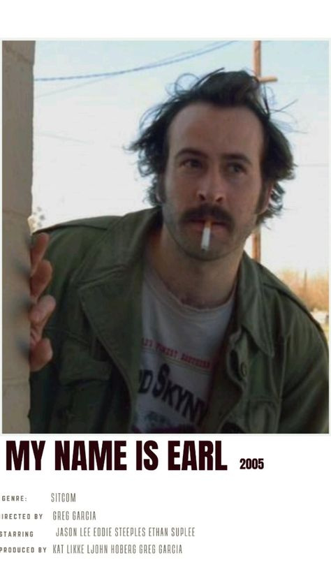

About My Name is Earl
My Name Is Earl is an American television sitcom created by Greg Garcia that aired on the NBC television network from September 20, 2005, to May 14, 2009, in the United States. It was produced by 20th Century Fox Television and starred Jason Lee as Earl Hickey, the title character. The series also starred Ethan Suplee, Jaime Pressly, Nadine Velazquez, and Eddie Steeples.
